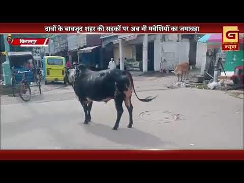
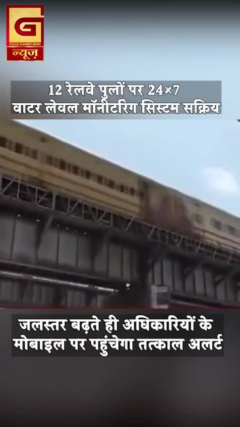
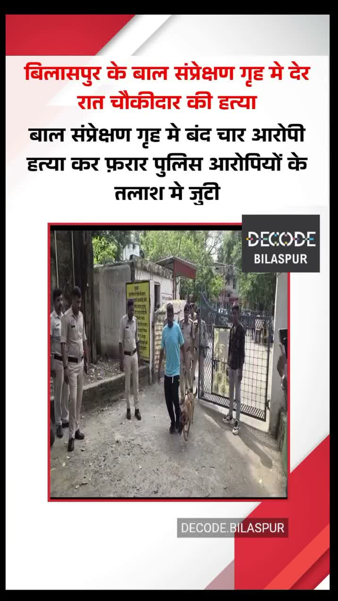
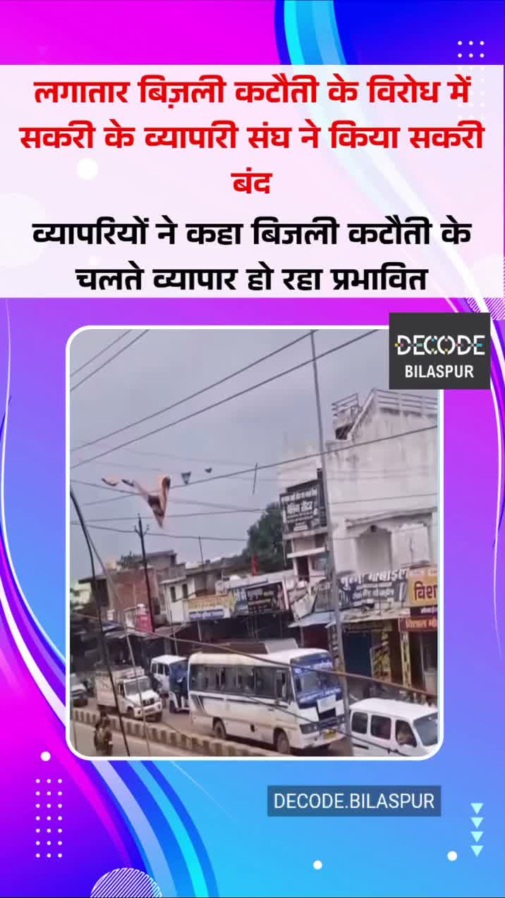
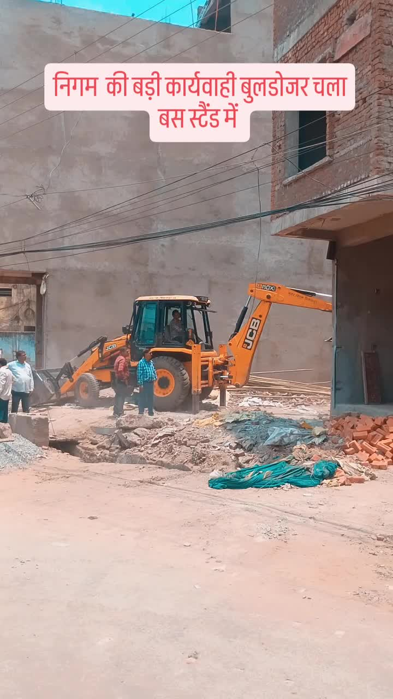

Bilaspur News Hub
2
BUSINESS
5
EDUCATION
3
EVENT
12
GOVERNMENT
2
HEALTH
3
INFRASTRUCTURE
142
INSTAGRAM NEWS
16
NEWS
3
OTHER
19
POLICE
2
SOCIAL
7
YOUTUBE VIDEOS
BUSINESS2

The Hitavada · Scraped: 2026-07-16 07:59:46
The long-awaited trade agreement between India and the United Kingdom has officially taken effect, promising enhanced bilateral commerce and investment. The pact is expected to boost economic ties and open new market opportunities for both nations.

The Hitavada · Scraped: 2026-07-16 07:59:46
CM Dr Mohan Yadav will today address textile investors at Bharat Tex-2026, seeking partnerships and investment in the sector. The event is expected to boost the state's textile industry and create jobs.
EDUCATION5

BREAKINGWeekly traffic classes in schools boost road safety / स्कूलों में हर सप्ताह लगेगी यातायात की क्लास
CG Wall · Published: Wed, 15 Ju | Scraped: 2026-07-15 18:53:56
Bilaspur launches a new road safety model with mandatory weekly traffic classes for students. The program aims to develop early awareness and reduce accidents by teaching safe road habits from childhood.

Nai Dunia Bilaspur · Published: Thu, 16 Ju | Scraped: 2026-07-16 10:01:19
The Chhattisgarh High Court dismissed a petition by 54 assistant teacher candidates seeking appointment. The ruling is a setback for those awaiting recruitment in the state's education sector.

The Hitavada · Scraped: 2026-07-16 07:59:46
The new pattern aligns with the Competency-Based Medical Education framework, affecting all upcoming MBBS theory examinations.
District Administration Bilaspur · Published: 2026-07-16 | Scraped: 2026-07-16 07:59:46
The District Administration of Bilaspur has revised the entrance exam date for lateral entry admission into Class 11 at Prayas Residential School for the 2026-27 session. The notice also includes the eligibility criteria for prospective students.

Guru Ghasidas Vishwavidyalaya · Published: 2026-07-16 | Scraped: 2026-07-16 11:33:18
Guru Ghasidas Vishwavidyalaya released an office memorandum clarifying admission procedures for supernumerary seats allocated to different candidate categories. The notice outlines eligibility criteria and application deadlines for prospective students.
EVENT3

The Hitavada · Scraped: 2026-07-16 10:01:19
The Subroto Cup soccer tournament for sub‑junior and junior categories begins on the 21st, featuring multiple schools and young talent across the region.

The Hitavada · Scraped: 2026-07-16 10:01:19
The Nobel summer cricket and football camps have ended, providing intensive training to participants and concluding a successful season of sports activities.
G News Bilaspur · Published: 2026-07-16 | Scraped: 2026-07-16 17:06:33
The evening final news broadcast from Bilaspur on 16 July 2026 covers the day's latest updates and events across the region.
GOVERNMENT12

Nai Dunia Bilaspur · Published: Thu, 16 Ju | Scraped: 2026-07-16 04:56:51
1 अगस्त से सभी छत्तीसगढ़ सरकारी दफ्तरों में प्री-पेड स्मार्ट मीटर अनिवार्य हो जाएंगे, जिससे बिजली केवल भुगतान के बाद मिलेगी। यह कदम बिजली चोरी कम करने और बिलिंग प्रक्रिया को कारगर बनाने के लिए उठाया गया है। अधिकारियों और नागरिकों को मीटर रिचार्ज करना होगा ताकि बिजली में बाधा न हो।

Nai Dunia Bilaspur · Published: Thu, 16 Ju | Scraped: 2026-07-16 04:56:51
अपनी बेटी के साथ हो रही लगातार प्रताड़ना से परेशान एक डॉक्टर ने छत्तीसगढ़ हाई कोर्ट का दरवाजा खटखटाया और त्वरित कार्रवाई की मांग की। अदालत ने एसडीएम को 30 दिनों के भीतर मामले में फैसला करने का निर्देश दिया है। यह मामला पीड़ितों को समयबद्ध न्याय दिलाने की ज़रूरत को रेखांकित करता है।

Lokswar · Published: Thu, 16 Ju | Scraped: 2026-07-16 10:01:19
The Chhattisgarh High Court issued an order promoting 38 civil judges in the judicial service, marking a major administrative reshuffle.

Lokswar · Published: Thu, 16 Ju | Scraped: 2026-07-16 13:18:56
Chief Minister Vishnu Dev Sai described the Rath Yatra as a living festival embodying faith, folk traditions, and community participation. The event was attended by Governor Raman Deka in Raipur's Gayatri Nagar, highlighting cultural significance and unity.

Nai Dunia Bilaspur · Published: Thu, 16 Ju | Scraped: 2026-07-16 17:06:33
The Chhattisgarh High Court ruled that a wife who has an illicit relationship with another man is not entitled to maintenance from her husband. The verdict emphasizes moral conduct as a condition for financial support.
Easy News · Scraped: 2026-07-16 17:06:33
Union Minister Tokhan Sahu visited Bilaspur Press Club, sharing a detailed roadmap for the city's development. He highlighted infrastructure, education, and health initiatives during the interaction.

The Hitavada · Scraped: 2026-07-16 10:01:19
Chhattisgarh is falling behind in key initiatives like Har Ghar Jal, solar power projects, and water quality testing, according to a report. The gaps highlight implementation challenges and the need for improved monitoring and funding.

BREAKINGReport on state finances for 2024-25 tabled / राज्य के वित्त वर्ष 2024-25 की रिपोर्ट पेश की गई
The Hitavada · Scraped: 2026-07-16 07:59:46
The budget report outlines revenue and expenditure plans, providing insights into the government's financial priorities for the upcoming fiscal year.
The Hitavada · Scraped: 2026-07-16 07:59:46
The administrative machinery in Jagdishpur has been mobilised to address local development issues. The move aims to ensure efficient service delivery and coordination among departments.
BREAKINGMinister Lakhan Patel loses Animal Husbandry portfolio / मंत्री लखन पटेल से पशुपालन विभाग छिना
The Hitavada · Scraped: 2026-07-16 07:59:46
Minister Lakhan Patel has been stripped of the Animal Husbandry portfolio, effective immediately. The decision follows recent administrative reshuffle aimed at improving governance.
District Administration Bilaspur · Published: 2026-07-16 | Scraped: 2026-07-16 15:31:23
The District Administration Bilaspur has released merit, selection, and waiting lists for Regional Coordinator positions under the Bihan mission. Interested candidates can check their status and proceed with further recruitment steps.
G News Bilaspur · Published: 2026-07-16 | Scraped: 2026-07-16 15:31:23
Congress has launched a strong attack on the Ram temple trust regarding donation handling, raising serious concerns about its operations. The party demands transparency and accountability in fund management. The controversy may have political implications across the region.
HEALTH2

CG Wall · Published: Thu, 16 Ju | Scraped: 2026-07-16 15:31:23
Doctors at SIMS performed a complex operation to save a six-year-old Baiga tribal boy facing a life‑threatening condition. The successful surgery restored his breathing and gave him a new chance at life.

Easy News · Scraped: 2026-07-16 17:06:33
Doctors at SIMS successfully removed a coin from the food pipe of a six-year-old boy, restoring his health. The quick surgical intervention prevented potential complications.
INFRASTRUCTURE3

Nai Dunia Bilaspur · Published: Thu, 16 Ju | Scraped: 2026-07-16 10:01:19
The mayor expressed strong displeasure over the deteriorating condition of a concrete road in Rajkishore Nagar, demanding immediate repairs and accountability.

The Hitavada · Scraped: 2026-07-16 10:01:19
Construction of RTMNU’s indoor sports complex has halted because of insufficient funds, delaying the facility meant for students and athletes.

G News Bilaspur · Published: 2026-07-16 | Scraped: 2026-07-16 17:06:33
Even though the municipal corporation claims to have controlled the problem, streets remain littered with stray cattle, causing traffic congestion and safety concerns.
INSTAGRAM NEWS142

An Instagram account @g_news_bilaspur posted a profile avatar, indicating social media activity. The post appears to be a routine update from the news outlet.
Rapid speeding accidents keep occurring in Bilaspur’s Chakarbhatha area, causing multiple fatalities. Authorities are urged to enforce speed limits and improve road safety measures.
बिलासपुर के व्यापार विहार स्थित अमरोंन रॉयल ऑटोमोटिव में पर्यावरण संरक्षण मंडल और जीएसटी विभाग की संयुक्त छापेमारी में पुरानी लेड-एसिड बैटरियों से भरा ट्रक जब्त किया गया। प्रारंभिक जांच में बिना वैध अनुमति बैटरियों को नागपुर भेजने की तैयारी सामने आई है। मामले में पर्यावरणीय नियमों और कर संबंधी अनियमितताओं की जांच जारी है।#Bilaspur #GSTRaid #EnvironmentProtection #BreakingNews by @g_news_bilaspur
बिलासपुर-उरगा मार्ग पर गूगल मैप के सहारे जा रही एक टाटा नेक्सन कार निर्माणाधीन पुल से करीब 30 फीट नीचे अरपा नदी में गिर गई। हादसे में रायगढ़ के चार युवक गंभीर रूप से घायल हुए। पुलिस के अनुसार पुल का निर्माण अधूरा था और प्रारंभिक जांच में तेज रफ्तार व गूगल मैप पर अत्यधिक निर्भरता हादसे की वजह मानी जा रही है।#BilaspurAccident #GoogleMaps #RoadSafety #BreakingNews by @g_news_bilaspur
पेंड्रा रेलवे स्टेशन पर मालगाड़ी के ऊपर चढ़े युवक को हाई वोल्टेज ओएचई लाइन से बड़ा खतरा था। रेलवे ने तुरंत बिजली सप्लाई बंद कर युवक को सुरक्षित नीचे उतारा। पुलिस मामले की जांच कर रही है।#Pendra #GaurelaPendraMarwahi #Railway #BreakingNews #RescueOperation #OHELine #RailwaySafety #CGNews #Chhattisgarh #LatestNews #TrainNews #SafetyFirst by @g_news_bilaspur

मानसून के दौरान रेल यात्रियों की सुरक्षा को ध्यान में रखते हुए दक्षिण पूर्व मध्य रेलवे ने 12 प्रमुख रेलवे पुलों पर सेंसर आधारित Water Level Monitoring System लगाया है। यह स्मार्ट तकनीक 24x7 जलस्तर की निगरानी करती है और खतरे की स्थिति में अधिकारियों को तुरंत अलर्ट भेजकर समय रहते सुरक्षा उपाय सुनिश्चित करती है।#MonsoonSafety #IndianRailways #SECR #SmartRailway #RailNews #FloodAlert #TechForSafety #CGNews by @g_news_bilaspur
बिलासपुर के अपोलो अस्पताल में हार्ट मरीज को एयरलिफ्ट करने के दौरान कथित लापरवाही को लेकर जिला कांग्रेस कमेटी ने अस्पताल प्रबंधन पर गंभीर आरोप लगाए हैं। कांग्रेस का दावा है कि मरीज को बिना डॉक्टर और नर्सिंग स्टाफ के बाहरी एंबुलेंस से एयरपोर्ट भेजा गया, जिससे उसकी हालत बिगड़ गई। मामले में अस्पताल प्रबंधन से 7 दिनों के भीतर जवाब मांगा गया है, अन्यथा उग्र आंदोलन की चेतावनी दी गई है।#Bilaspur #ApolloHospital #Healthcare #Congress #PatientSafety #Chhattisgarh #BreakingNews by @g_news_bilaspur
Arpa River overflowed, spilling water over Domuhani Anicut. People are crossing the fast-flowing water despite the danger.
Heavy rain caused waterlogging behind the Bilaspur Collectorate, submerging pathways and blocking office entry. Residents and officials struggle to commute due to inadequate drainage.
A 19-year-old man was found dead in a Bhilai hotel room, identified as Shadab. Police are investigating the cause of death and surrounding circumstances.
A house construction dispute in Dodki village escalated into violence, prompting police intervention. Authorities are investigating and working to restore peace.

Narendra Khande, a watchman at the Bal Saprakshan Grih, was murdered late Sunday night. The killing may have triggered a jailbreak, leading to a large police manhunt.
A 19-year-old nursing student was found murdered in Ramnagar, Bhilai on Friday, shocking the local community. Police have launched an investigation to identify and arrest the culprits.
During the monsoon season, potholes have developed on roads near Tarabihar Chowk in Bilaspur, causing inconvenience. PWD workers are now fixing the damaged roads to improve safety and traffic flow.
Late night police conducted a raid on ONC and Central Point Bar in Mal, Korba, after the legal hours had passed. The operation aimed to enforce licensing and crowd regulations.

Persistent unscheduled power outages have disrupted businesses in Sakri, prompting traders to organize a protest. The merchant association met today to demand reliable electricity supply and compensation.
Numerous women gathered at Saja MLA Eshwar Sahu's residence to voice grievances about electricity problems. The protest highlights the urgent need for better power services in the area.
A post by @bilaspurcrime reports a chopati-related incident in Bilaspur, prompting concern over local safety. Authorities have not yet released details.
A post highlights that the hoisting of the national flag in Bilaspur was marred by inadequate lighting, constituting disrespect to the symbol. The incident has drawn attention to the need for proper illumination during official ceremonies.

A sudden demolition by the corporation at Bilaspur's bus stand sparked panic among commuters. The incident raises concerns over safety protocols and the handling of public infrastructure projects.
NEWS16

Nai Dunia Bilaspur · Published: Thu, 16 Ju | Scraped: 2026-07-15 20:50:39
<img src="https://img.naidunia.com/naidunia/ndnimg/16072026/16_07_2026-highcourtcg_m_2026716_03323.jpg" />छत्तीसगढ़ हाईकोर्ट ने प्रदेश में पदस्थ 38 सिविल जज जूनियर डिविजन को सिविल जज सीनियर डिविजन के पद में पदोन्नत किया है। सभी को मार्च, अप्रैल के विभिन्न तिथि से पदोन्नति प्रदान किया गया है।

Lokswar · Published: Thu, 16 Ju | Scraped: 2026-07-16 04:56:51
The monsoon has become active again in Chhattisgarh after a brief lull, bringing heavy rainfall and lightning threats. Authorities have issued alerts for the next two days urging people to stay cautious.

Lokswar · Published: Thu, 16 Ju | Scraped: 2026-07-16 17:06:33
Senior journalist Mukesh S. Singh received an award from SECR Raipur division for his factual and authentic reporting. The honour recognises his contributions to journalism.

BREAKINGWB MLA Madan Mitra joins rebel camp / पश्चिम बंगाल के विधायक मदन मित्रा विद्रोही खेमे में शामिल
The Hitavada · Scraped: 2026-07-16 07:59:46
Former West Bengal minister Madan Mitra has switched sides, joining the rebel faction within the state legislature. The move has sparked political speculation about upcoming alliances and the ruling party's stability.
The Hitavada · Scraped: 2026-07-16 07:59:46
The United States has reinstated a blockade on Iran, prompting Tehran to warn it may cut off all energy exports from the Middle East. The escalating tension could disrupt global oil markets and affect energy security.
The Hitavada · Scraped: 2026-07-16 07:59:46

The Hitavada · Scraped: 2026-07-16 07:59:46
The Hitavada · Scraped: 2026-07-16 07:59:46
The Hitavada · Scraped: 2026-07-16 07:59:46
The Hitavada · Scraped: 2026-07-16 07:59:46
The Hitavada · Scraped: 2026-07-16 07:59:46
The Hitavada · Scraped: 2026-07-16 07:59:46
The Hitavada · Scraped: 2026-07-16 07:59:46
The Hitavada · Scraped: 2026-07-16 07:59:46
The Hitavada · Scraped: 2026-07-16 07:59:46
The Hitavada · Scraped: 2026-07-16 07:59:46
Residents are advised to prepare for wet conditions as the monsoon season advances, potentially affecting daily activities.
OTHER3
Lokswar · Published: Thu, 16 Ju | Scraped: 2026-07-16 15:31:23
Despite the municipal drive catching over 3,000 stray cattle in two weeks, Bilaspur’s streets remain crowded with unattended animals. The ongoing problem highlights the need for sustained animal control and public awareness.
The Hitavada · Scraped: 2026-07-16 07:59:46
India's DRDO has finished military trials of a secure quantum communication system, marking a breakthrough in encrypted defense communications. The technology promises unhackable links for strategic operations.
G News Bilaspur · Published: 2026-07-16 | Scraped: 2026-07-16 15:31:23
This item appears to be a placeholder for a news update dated 16 July, with no further details provided.
POLICE19

CG Wall · Published: Wed, 15 Ju | Scraped: 2026-07-15 18:53:56
A young man was arrested near Rahangi Chowk after brandishing a sharp knife and intimidating pedestrians. Police prevented his attempt to spread fear in the area, reinforcing public safety measures.

Nai Dunia Bilaspur · Published: Thu, 16 Ju | Scraped: 2026-07-16 04:56:51
बिलासपुर में एक पुलिसकर्मी का मोबाइल मालिशियस APK के ज़रिए हैक कर लिया गया, जिससे उसके बैंक खाते से 29 हज़ार रुपये चोरी हो गए। Authorities ने चेतावनी दी है कि अज्ञात स्रोतों से APK डाउनलोड करने से बचा जाए। इस मामले में आगे की जाँच जारी है।

Nai Dunia Bilaspur · Published: Thu, 16 Ju | Scraped: 2026-07-16 04:56:51
रतनपुर में बदमाशों ने एक शिक्षक पर हमला किया, उसे धक्का देकर गिराया और चाकू दिखाकर हज़ारों रुपये लूट लिए। पुलिस ने चार अपराधियों को गिरफ़्तार कर लिया है। इस घटना ने शिक्षकों की सुरक्षा को लेकर चिंताएँ बढ़ा दी हैं।

Nai Dunia Bilaspur · Published: Thu, 16 Ju | Scraped: 2026-07-16 04:56:51
बिलासपुर के सरकंडा इलाके में एक रिटायर्ड पुलिस इंस्पेक्टर का शव फांसी पर लटका मिला, जिससे इलाके में भारी सनसनी फैल गई। पुलिस ने मामले की जाँच शुरू कर दी है और आत्महत्या या हत्या की संभावनाओं को तलाश रही है। इस दुखद घटना ने पूरे समुदाय को झकझोर दिया है।

CG Wall · Published: Thu, 16 Ju | Scraped: 2026-07-16 04:56:51
A retired police inspector was found dead under suspicious circumstances in Saranda police station area, prompting a thorough investigation. Police are examining all angles to determine the cause of death.

Lokswar · Published: Thu, 16 Ju | Scraped: 2026-07-16 04:56:51
Chhattisgarh Police Headquarters transferred ten officers, including seven inspectors and three sub-inspectors, for administrative reasons. The reshuffle aims to improve operational efficiency across districts.

Nai Dunia Bilaspur · Published: Thu, 16 Ju | Scraped: 2026-07-16 07:59:46
A court has rejected bail for the young woman convicted of murdering her lover, calling the crime heinous and undeserving of leniency. The verdict underscores the severity of such violent crimes.

Lokswar · Published: Thu, 16 Ju | Scraped: 2026-07-16 07:59:46
A tractor collided with a scooter on Thursday morning on National Highway in Bhilai-3, killing four people, including two women, and injuring a child. Police have registered a case and are investigating the accident.
Lokswar · Published: Thu, 16 Ju | Scraped: 2026-07-16 07:59:46
Mungeli police conducted a major anti‑drug drive, destroying contraband including ganja, brown sugar, charas and opium valued at ₹8,43,914. The operation aimed to curb drug trafficking in the region. No arrests were reported yet.
Lokswar · Published: Thu, 16 Ju | Scraped: 2026-07-16 07:59:46
A dead body of an unidentified young man was discovered on Sipat Road near Chawla Greens, causing shock in Bilaspur. Police have launched an investigation to identify the victim and determine the cause of death.
Lokswar · Published: Thu, 16 Ju | Scraped: 2026-07-16 10:01:19
The accused used mobile hacking to siphon money from bank accounts, stealing ₹3.94 lakh. Raipur police have arrested the two inter‑state fraudsters in the case.
Lokswar · Published: Thu, 16 Ju | Scraped: 2026-07-16 11:33:18
A truck plunged into a gorge at Loro Ghat in Jashpur district, trapping three passengers. Police conducted a three‑hour rescue operation, successfully extricating them unharmed.

Lokswar · Published: Thu, 16 Ju | Scraped: 2026-07-16 13:18:56
A retired police inspector was discovered hanging at his residence in Saranda, Bilaspur. Police have started an investigation to determine whether it was suicide or foul play. The case has drawn attention due to his past duties.

CG Wall · Published: Thu, 16 Ju | Scraped: 2026-07-16 15:31:23
A dispute over CCTV footage escalated into a violent attack, with a restaurant owner being doused in petrol and left for dead. Six individuals have been arrested by police in connection with the attempted murder.
Lokswar · Published: Thu, 16 Ju | Scraped: 2026-07-16 15:31:23
A son, under the influence of alcohol, attacked his father with a knife in Bilaspur, leading to an attempted murder case. The incident highlights the dangers of alcohol abuse and domestic violence.

CG Wall · Published: Thu, 16 Ju | Scraped: 2026-07-16 17:06:33
A 67-year-old illiterate man from Ghoramar village in Kotwa police station area was duped into signing documents after being taught to write, resulting in the loss of his land and savings. Police are investigating the fraud case.
The Hitavada · Scraped: 2026-07-16 07:59:46
The accident caused injuries to many workers traveling to their workplaces, prompting emergency response and traffic disruptions.
The Hitavada · Scraped: 2026-07-16 07:59:46
Police have solved the Aishbag double murder case, revealing a property dispute as the motive. Two brothers were arrested for killing an elderly couple over land rights.
G News Bilaspur · Published: 2026-07-16 | Scraped: 2026-07-16 15:31:23
Police have achieved a major breakthrough in the Saranda guard murder case, apprehending one suspect in Prayagraj. The arrest marks a significant step towards solving the crime. Investigators are continuing to pursue other possible accomplices.
SOCIAL2
Press Club ends protest after collector assurance on Pendra bypass / जिला प्रेस क्लब ने पेंड्रा बायपास निर्माण को लेकर कलेक्टर के आश्वासन पर आंदोलन स्थगित किया
Lokswar · Published: Thu, 16 Ju | Scraped: 2026-07-16 15:31:23
After the collector gave assurances about the long‑pending Pendra bypass project, the District Press Club called off its six‑day public agitation. The suspension reflects community hope for improved connectivity and resolution of the road issue.
Grand launch of ‘Nashe Se Doori Hai Zaroori 2.0’ drive / नशे से दूरी है जरूरी 2.0 अभियान का भव्य शुभारंभ
The Hitavada · Scraped: 2026-07-16 07:59:46
The campaign aims to promote sobriety and raise awareness about the dangers of alcohol consumption among youth.
YOUTUBE VIDEOS7


Grand News Bilaspur provides latest morning updates and headlines as of 16 July 2026, covering various regional news sources.
Various groups are calling for an impartial investigation overseen by the Supreme Court. They argue that only a neutral probe can ensure justice and transparency in the case.
Operators gathered in Bilaspur to coordinate on industry challenges and upcoming changes. The meeting aimed to shape a unified approach for the regional cable sector.
Parents have voiced strong protests against the recent evaluation policy, citing concerns over fairness and impact on students. The opposition highlights a growing debate over educational reforms.
A spectacular chariot procession wound through Bilaspur, filled with devotees chanting 'Jai Jagannath'. The event drew large crowds and showcased vibrant cultural traditions.
Police have been alerted after a gang of interstate thieves was found operating in Bilaspur. The criminals are suspected of multiple thefts across the region. Authorities are intensifying investigations to apprehend the culprits.


A massive chariot procession was held amid chants of Jai Jagannath, with the Governor and Chief Minister observing the traditional chera-pahra ceremony.